Learning Objectives
Table of Contents
Step 0: Earlier Phases of the Software Life Cycle
We assume that earlier phases of the Software Life Cycle have been completed. See Dr. Balci's Software Life Cycle. The life cycle processes Problem Formulation, Requirements Engineering, Architecting, and Design are assumed to be completed. In this tutorial, we focus on the Programming process.
Step 1: Application Functionality Specification
| Portrait Orientation | Error Message |
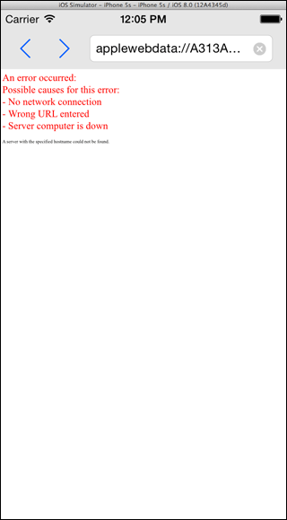 |
|
| Landscape Orientation | |
 |
|
Step 2: Application Design Specification based on the MVC Design Pattern
The iOS applications are designed using the following Design Patterns: (1) Model-View-Controller (MVC), (2) Delegation, and (3) Target-Action. Based on the desired functionality described above, we have the following MVC-based design specification for our application.
Our User Interface (UI) consists of four objects: two UIButton objects for Back and Forward buttons, a UITextField object for entering URL, and a UIWebView object for displaying the web page for the entered URL. The layout of the screen is shown above. Our View Controller object inherits from the UIViewController class and conforms to two protocols: UIWebViewDelegate and UITextFieldDelegate.
Our ViewController object acts as a delegate for
- the UITextField object so that we can implement the textFieldShouldReturn: protocol method to capture the text the user typed in. We will examine the entered text to see if it starts with "http://"; if not, we will insert it. This way, we do not require the user to type "http://" for each URL.
- the UIWebView object so that we can implement (Note: Always implement these three methods whenever you display a web view.)
- the webViewDidStartLoad: protocol method to display an animated icon in the status bar to indicate that the web browser is busy while loading the page.
- the webViewDidFinishLoad: protocol method to
- stop displaying the animated icon in the status bar,
- display the URL of the loaded web page in the URL text field, and
- set the colors of the Back and Forward buttons depending on if the web view can go Back or Forward.
- the webView:didFailLoadWithError: protocol method to
- ignore the error if the page is instantly redirected via javascript or in another way,
- stop displaying the animated icon in the status bar,
- set the colors of the Back and Forward buttons depending on if the web view can go Back or Forward, and
- display an error message.
Step 3: Creation of a New Project
- Launch Xcode. Create a new project by selecting File → New → Project...
- Select iOS → Application → Single View Application template. Click Next.
- In the Choose options for your new project dialog,
- Enter Product Name as Web.
- Enter Your Name as Organization Name.
- Enter com.yourname as your company/organization unique identifier. Note that domain names, e.g., apple.com, ibm.com, microsoft.com, are unique.
- The string com.yourname.Web becomes the Bundle ID for your application uniquely identifying it in the App Store for distribution.
- Select Swift as the programming language to use.
- Select Universal for the Devices, implying that your app will run on those iOS devices, i.e., iPhone, iPad, and iPod Touch, that can run iOS 8.0 or higher. Note that some old iOS devices cannot be upgraded to version 8.0.
- Click Next. In the File Browser window displayed,
- Select a location on your hard disk to store your project.
- Uncheck Source Control to disable version control. Click Create to create your project.
General Project Settings
- Click the project name Web in the project navigator to display the General project settings.
- Click the Team pop-up menu and select your iOS Developer Program account name from the list displayed. If you have not added your iOS Developer Program account, select Add an Account...
Copying Files into Your Project
- Download the Web_files.zip file.
- Uncompress it.
- Click Images.xcassets in the project navigator to display the Image Assets Pane.
- Drag and drop the downloaded folders App Icons, Button Icons, and Launch Images into the Image Assets Pane.
- Images dragged and dropped in the Image Assets Pane are stored in the Media Library.
Setting the App Icons
- Click AppIcon in the Image Assets Pane.
- Select the options for iOS 7.0 and Later Sizes for both iPhone and iPad under the Attributes Inspector.
- Click the Media Library icon in the Library Selector Bar to show all of the image assets for the project.
- Select all of the app icons.
- Drag and drop the selected app icons into the AppIcon assets area.
- Drag and drop the app icons on the remaining empty placeholders with corresponding sizes.
- Make sure that each placeholder has an image.
- You can inspect the size, filename, and other attributes of a selected app icon using the Attributes Inspector.
Setting the Launch Images
- Click LaunchImage in the Image Assets Pane.
- Select all options for iOS 7.0 and Later for iPhone and iPad under the Attributes Inspector.
- Click the Media Library icon in the Library Selector Bar to show all of the image assets for the project.
- Drag and drop a launch image to its corresponding placeholder in the LaunchImage assets area.
- You can inspect the size, filename, and other attributes of a selected image using the Attributes Inspector.
Step 4: MVC Design Pattern: View – User Interface Development
Click the Main.storyboard file to open it.
1. Color the background
- Click inside the window to select the View canvas object belonging to the UIView class.
- Bring up the Attributes inspector and click within the color well (rectangle image to the right of Background label) to bring up the color palette.
- Select the gray crayon called Mercury.
2. Create the Back Button
- Drag a Button object from the Object library and drop it on the View (UIView) canvas on the top left just under the status bar.
- While the button object is selected, under the Attributes inspector:
- Delete its Button title
- Select backGray from the Image pull-down menu
- While the button object is selected, under the Size inspector:
- Set x=16, y=31, w=24, and h=24, with origin specified as the upper-left corner.
3. Create the Forward Button
- Drag a Button object from the Object library and drop it on the View (UIView) canvas on the right of the Back button.
- While the button object is selected, under the Attributes inspector:
- Delete its Button title
- Select forwardGray from the Image pull-down menu
- While the button object is selected, under the Size inspector:
- Set x=60, y=31, w=24, and h=24, with origin specified as the upper-left corner.
4. Create the Text Field for Entering a URL
- Drag a Text Field object from the Object library and drop it on the View (UIView) canvas to the right of the Forward button.
- Select the UITextField object, bring up the Size inspector, and set x=100, y=28, w=484, and h=30, with origin specified as the upper-left corner
- While the UITextField object is selected, under the Attributes inspector, do the following:
- Type http://www.marketwatch.com for Text.
- Type Enter URL for Placeholder.
- Select Is always visible from the Clear Button pop-up menu.
- Set Capitalization to None, Correction to No, Keyboard Type to URL, and Return Key to Go.
- Select Auto-enable Return Key to disable the Return key Go if the text field is empty, requiring the user to enter at least one character.
5. Create the Web View
- Drag a Web View object from the Object library and drop it on the View (UIView) canvas.
- While the UIWebView object is selected, under the Size inspector,
- Set x=0, y=66, w=600, and h=534, with origin specified as the upper-left corner.
- While the UIWebView object is selected, under the Attributes inspector, check the box for:
- Scales Page To Fit, Links, Addresses, Events, and Multiple Touch for Interaction.
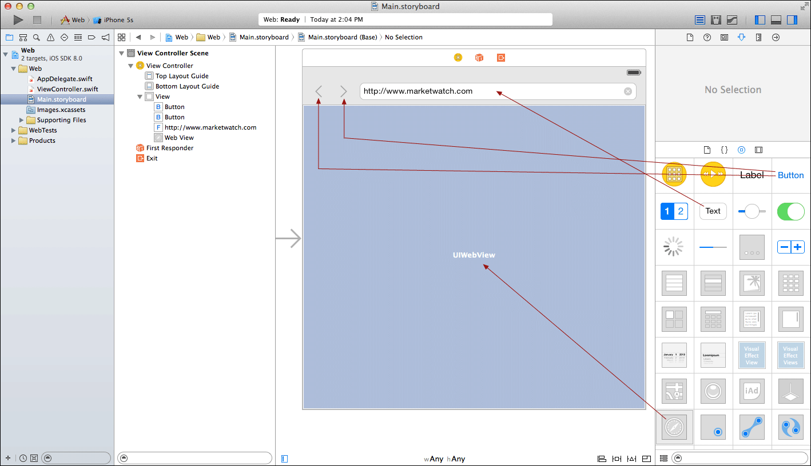
5. Auto Layout of the UI Objects
- Select the Back Button object and click the Pin button to pop up the Add New Constraints dialog as shown below.
- Click the top and left I beams to fix the distance for the top and left sides.
- Select the width and height to fix the button size.
- Click Add 4 Constraints to apply the constraints.
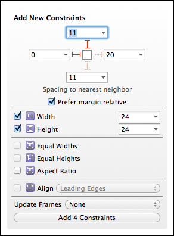
- Select the Forward Button object and click the Pin button to pop up the Add New Constraints dialog as shown below.
- Click the top and left I beams to fix the distance for the top and left sides.
- Select the width and height to fix the button size.
- Click Add 4 Constraints to apply the constraints.
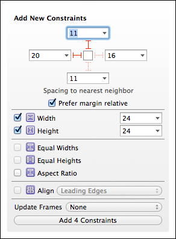
- Select the Text Field object and click the Pin button to pop up the Add New Constraints dialog as shown below.
- Click the top, left and right I beams to fix the distance for the top, left and right sides.
- Click Add 3 Constraints to apply the constraints.
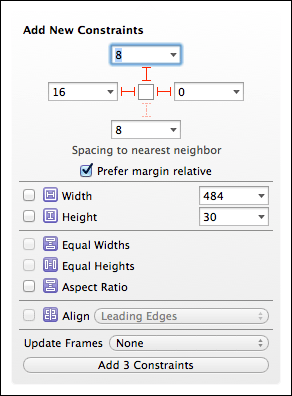
- Select the Web View object and click the Pin button to pop up the Add New Constraints dialog as shown below.
- Uncheck Prefer margin relative
- Click the top and bottom, and left and right I beams to fix the distance for all sides.
- Click Add 4 Constraints to apply the constraints.
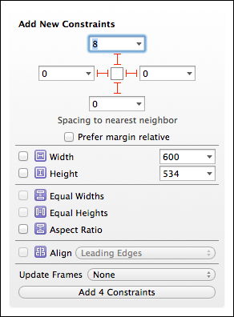6. Run your application under the iOS Simulator
- Make sure that all of your files are saved.
- Click the device selection pop-up menu for the iOS Simulator on the top left corner of the Xcode window and select iPhone 5S.
- Click the Run button on the top left corner of the Xcode window to execute your app under the iOS Simulator.
- Under the iOS Simulator, select Hardware → Rotate Left or Rotate Right or press Command-Left Arrow or Command-Right Arrow repeatedly to see how auto layout works under different device orientations and screen sizes.
- Try the above for other iOS devices.
Step 5: Target-Action Design Pattern
Under the Target-Action design pattern, we graphically connect 4 @IBOutlet variables and 2 @IBAction methods to our ViewController.swift code.
- Show the storyboard and the ViewController.swift file in the Assistant Editor side by side as shown in the following screenshot.
- Make our View Controller class to conform to the UIWebViewDelegate and UITextFieldDelegate protocols by adding them to the class declaration as shown below:
class ViewController: UIViewController, UIWebViewDelegate, UITextFieldDelegate {
- Connect the Back Button
- Control-drag from the Back Button object in the storyboard to the location in the ViewController.swift file as shown in the screenshot below. When you let go the mouse button, a dialog box shows up.
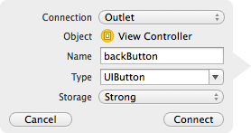
- Enter the name and make the selections as shown above.
- Click Connect to make the connection.
- Connect the Forward Button
- Control-drag from the Forward Button object in the storyboard to the location in the ViewController.swift file as shown in the screenshot below. When you let go the mouse button, a dialog box shows up.
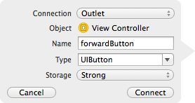
- Enter the name and make the selections as shown above.
- Click Connect to make the connection.
- Connect the Text Field
- Control-drag from theText Fieldobject in the storyboard to the location in the ViewController.swift file as shown in the screenshot below. When you let go the mouse button, a dialog box shows up.
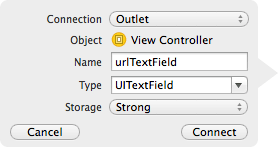
- Enter the name and make the selections as shown above.
- Click Connect to make the connection.
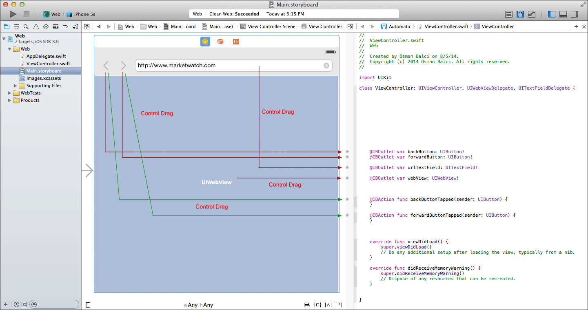
- Connect the Web View
- Control-drag from the Web View object in the storyboard to the location in the ViewController.swift file as shown in the screenshot above. When you let go the mouse button, a dialog box shows up.
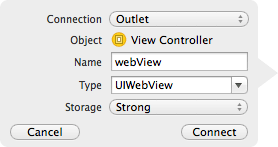
- Enter the name and make the selections as shown above.
- Click Connect to make the connection.
- Connect the Back Button to invoke a method when tapped
- Control-drag from the Back Button object in the storyboard to the location in the ViewController.swift file as shown in the screenshot above. When you let go the mouse button, a dialog box shows up.
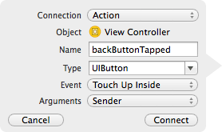
- Enter the name and make the selections as shown above.
- Click Connect to make the connection.
- Connect the Forward Button to invoke a method when tapped
- Control-drag from the Forward Button object in the storyboard to the location in the ViewController.swift file as shown in the screenshot above. When you let go the mouse button, a dialog box shows up.
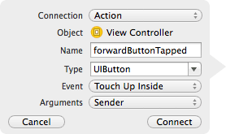
- Enter the name and make the selections as shown above.
- Click Connect to make the connection.
Step 6: Delegation Design Pattern
UITextField has a protocol called UITextFieldDelegate Protocol naming some methods that can be implemented optionally. We need to implement the following to obtain, in our code, the URL text the user enters:
func textFieldShouldReturn(textField: UITextField!) -> Bool
To be able to capture and implement this protocol method, we need to:
- Make the ViewController class to conform to the UITextFieldDelegate protocol by adding UITextFieldDelegate to the class declaration as shown below:
class ViewController: UIViewController, UIWebViewDelegate, UITextFieldDelegate {
- Designate the ViewController object to be the delegate for the UITextFieldDelegate protocol. To do this,
- Control-drag from the UITextField object to the ViewController object in the objects dock as shown in the screenshot below.
- When you let go the mouse button, a dialog box shows up.
- Select delegate from the pop-up menu to set the ViewController object to be the delegate for the UITextFieldDelegate protocol.
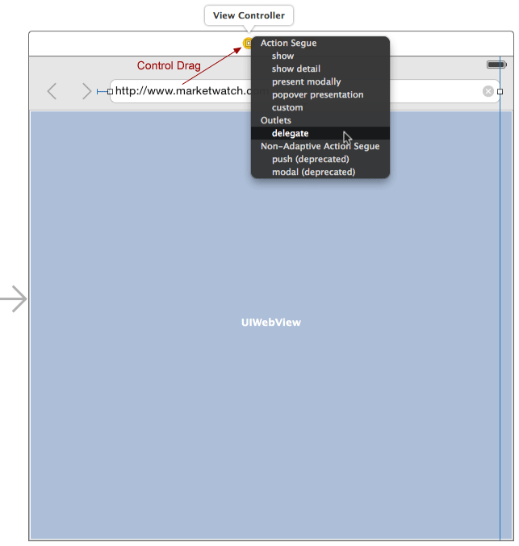
UIWebView has a protocol called UIWebViewDelegate Protocol naming some methods that can be implemented optionally. You must implement the following three protocol methods whenever you display a UIWebView object.
func webViewDidStartLoad(webView: UIWebView!)
func webViewDidFinishLoad(webView: UIWebView!)
func webView(webView: UIWebView!, didFailLoadWithError error: NSError!)
To be able to capture and implement these protocol methods, we need to:
- Make the ViewController class to conform to the UIWebViewDelegate protocol by adding UIWebViewDelegate to the class declaration as shown below:
class ViewController: UIViewController, UIWebViewDelegate, UITextFieldDelegate {
- Designate the ViewController object to be the delegate for the UIWebViewDelegate protocol. To do this,
- Control-drag from the UIWebView object to the ViewController object in the scene dock as shown in the screenshot below.
- When you let go the mouse button, a dialog box shows up.
- Select delegate from the pop-up menu to set the ViewController object to be the delegate for the UIWebViewDelegate protocol.
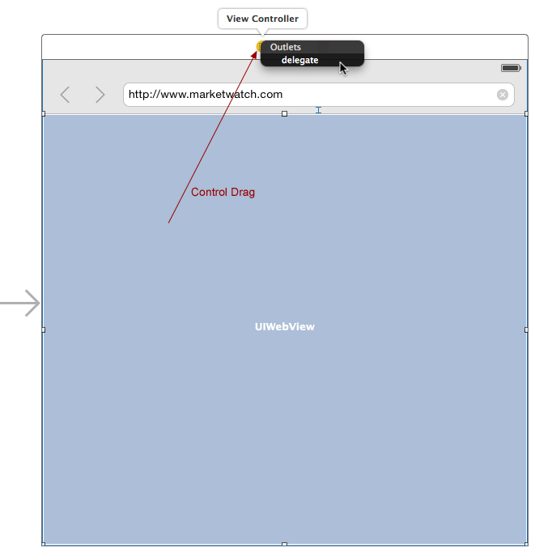
Step 7: MVC Design Pattern: Controller
Copy and paste the documented code given below. Carefully study the code, understand what it is doing, and learn from it!
ViewController.swift file:
//
// ViewController.swift
// Web
//
// Created by Osman Balci on 8/5/14.
// Copyright (c) 2014 Osman Balci. All rights reserved.
//
import UIKit
class ViewController: UIViewController, UIWebViewDelegate, UITextFieldDelegate {
@IBOutlet var backButton: UIButton!
@IBOutlet var forwardButton: UIButton!
@IBOutlet var urlTextField: UITextField!
@IBOutlet var webView: UIWebView!
// This method is invoked when the user taps the back button
@IBAction func backButtonTapped(sender: UIButton) {
webView.goBack()
}
// This method is invoked when the user taps the forward button
@IBAction func forwardButtonTapped(sender: UIButton) {
webView.goForward()
}
let backButtonBlueImage = UIImage(named: "backBlue")
let backButtonGrayImage = UIImage(named: "backGray")
let forwardButtonBlueImage = UIImage(named: "forwardBlue")
let forwardButtonGrayImage = UIImage(named: "forwardGray")
// This function is called to set the colors of the back and forward buttons
func setBackForwardButtons() {
// Display the back button in blue color if a previous web page exists.
// Otherwise, display the back button in gray color.
if webView.canGoBack {
backButton.setImage(backButtonBlueImage, forState: UIControlState.Normal)
} else {
backButton.setImage(backButtonGrayImage, forState: UIControlState.Normal)
}
// Display the forward button in blue color if a forward web page exists.
// Otherwise, display the forward button in gray color.
if webView.canGoForward {
forwardButton.setImage(forwardButtonBlueImage, forState: UIControlState.Normal)
} else {
forwardButton.setImage(forwardButtonGrayImage, forState: UIControlState.Normal)
}
}
override func viewDidLoad() {
// When the view loads, the webView object is asked to show the default homepage
/*
* Convert the default URL http://www.marketwatch.com/ into an NSURL object and store
* its object reference into the local variable url. An NSURL object represents a URL.
*/
var url = NSURL(string: "http://www.marketwatch.com/")
/*
* Convert the NSURL object into an NSURLRequest object and store its object
* reference into the local variable request. An NSURLRequest object represents
* a URL load request in a manner independent of protocol and URL scheme.
*/
var request = NSURLRequest(URL: url)
// Ask the webView object to display the web page for the default URL
webView.loadRequest(request)
// Tell the super class to continue with the viewDidLoad method execution
super.viewDidLoad()
}
/****************************
* UITextField Delegate Method
****************************/
// This UITextField Delegate Method is called when the user taps the Go button or
// hits the Return key on the keyboard after entering a URL.
func textFieldShouldReturn(textField: UITextField!) -> Bool {
// Deactivate the text field and remove the keyboard
textField.resignFirstResponder()
// Assign the URL text entered by the user into a constant string called enteredURL
let enteredURL = textField.text
// Define a constant string called http having a value of "http://"
let http = "http://"
if enteredURL.hasPrefix(http) {
// enteredURL starts with "http://"
/*
* Convert the URL entered by the user into an NSURL object and store its object
* reference into the local variable url. An NSURL object represents a URL.
*/
var url = NSURL(string: enteredURL)
/*
* Convert the NSURL object into an NSURLRequest object and store its object
* reference into the local variable request. An NSURLRequest object represents
* a URL load request in a manner independent of protocol and URL scheme.
*/
var request = NSURLRequest(URL: url)
// Ask the webView object to display the web page for the URL entered by the user.
webView.loadRequest(request)
} else {
// enteredURL does not start with "http://", so add it to the beginning of enteredURL
var url = NSURL(string: http + enteredURL)
var request = NSURLRequest(URL: url)
webView.loadRequest(request)
}
return true
}
/******************************************************************************************
* UIWebView Delegate Methods: These methods must be implemented whenever UIWebView is used.
******************************************************************************************/
func webViewDidStartLoad(webView: UIWebView!) {
// Starting to load the web page. Show the animated activity indicator in the status bar
// to indicate to the user that the UIWebVIew object is busy loading the web page.
UIApplication.sharedApplication().networkActivityIndicatorVisible = true
}
func webViewDidFinishLoad(webView: UIWebView!) {
// Finished loading the web page. Hide the activity indicator in the status bar.
UIApplication.sharedApplication().networkActivityIndicatorVisible = false
// Display the URL of the loaded web page in the URL text field
urlTextField.text = self.webView.stringByEvaluatingJavaScriptFromString("window.location.href")
// Call this function to set the colors of the back and forward buttons
setBackForwardButtons()
}
func webView(webView: UIWebView!, didFailLoadWithError error: NSError!) {
/*
Ignore this error if the page is instantly redirected via javascript or in another way.
NSURLErrorCancelled is returned when an asynchronous load is cancelled, which happens
when the page is instantly redirected via javascript or in another way.
*/
if error.code == NSURLErrorCancelled {
return
}
// Call this function to set the colors of the back and forward buttons
setBackForwardButtons()
// An error occurred during the web page load. Hide the activity indicator in the status bar.
UIApplication.sharedApplication().networkActivityIndicatorVisible = false
// Create the error message in HTML as a character string and store it into the local constant errorString
let errorString = "<html><font size=+2 color='red'><p>An error occurred: <br />Possible causes for this error:<br />- No network connection<br />- Wrong URL entered<br />- Server computer is down</p></font></html>" + error.localizedDescription
// Display the error message within the UIWebView object
self.webView.loadHTMLString(errorString, baseURL: nil)
}
}
Step 8: Build and Run your Application
- Make sure that all of your files are saved.
- Click the device selection pop-up menu for the iOS Simulator on the top left corner of the Xcode window and select iPhone 5S.
- Click the Run button on the top left corner of the Xcode window to execute your app under the iOS Simulator.
- Under the iOS Simulator, select Hardware → Rotate Left or Rotate Right or press Command-Left Arrow or Command-Right Arrow repeatedly to see how auto layout works under different device orientations and screen sizes.
- Try the above for other iOS devices.